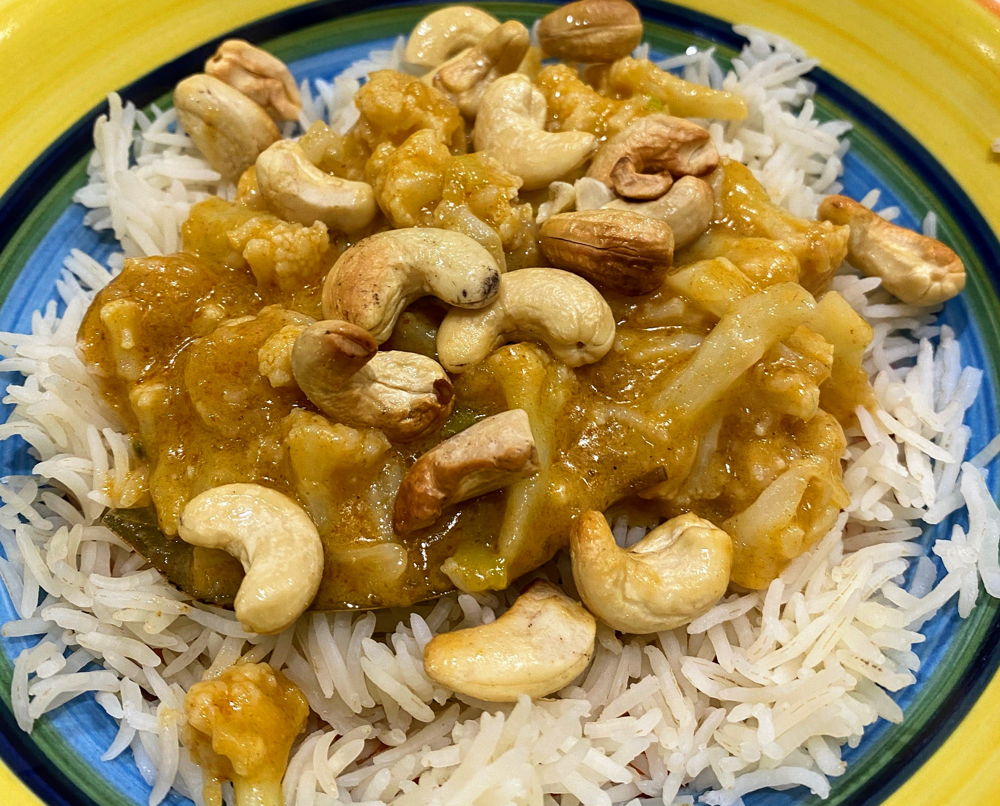

Toasted Cashew Nut & Cauliflower Curry
 Vegan
Vegan

- 1 cauliflower head
- salt
- 2 bay leaves
- coconut oil
- 4 spring onions
- 2 tsp ginger
- 1 tsp cumin
- 1 tsp coriander
- 1/4 cup Thai red curry paste
- 1 x can coconut cream
- cashew nuts-
Boil cauliflower, salt and bay leaves for 4 mins Drain cauliflower Heat coconut oil, spring onions and spicesf for 1 min Add curry paste and stir Add cauliflower and coconut cream Allow to simmer for 10 mins, until cauliflower is tender Meanwhile toast cashew nuts in oven Serve with lime juice, toasted nuts, rice and naan bread